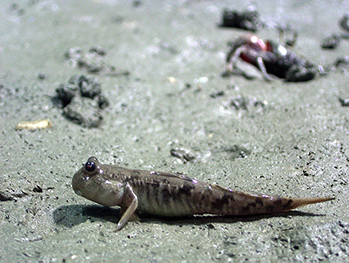

學長說我以前放學可以去玩的地方實在太多了，都沒時間寫功課了！(開玩笑)社子島擁有豐富的自然生態和人文風情，以前還未受到汙染的環境，是個人與動植物共處的天地，是一個令人嚮往的遊戲天堂。
浮洲舊堤防秘境
洪爺爺：你們最幸運就是生在這個時代，以前的時代什麼都沒有，沒有那麼方便。
學生：可是爺爺你們可以到河邊玩水，現在不行，因為現在淡水河、基隆河很髒！
洪爺爺：對啊，現在比較髒，沒有地方玩就是你們現在比較苦啦！比我們以前差很多，我們隨便要去玩水啦、游泳啦，或者是抓東西，要玩的地方很多。那麼你們現在沒有什麼地方玩，就好像日本人講的machi baku(日語)，就是都市裡頭的箱，好像一進去就是箱。就是關在裡頭只有看電視、打電動、電腦(日語)知道嗎，就這樣，比以前比較可恨，沒有東西好玩。以前什麼都是自然的，自然的場景、空氣、什麼那個都比較好，現在很可憐就是這一點。最可憐就是一回來就是在家裡看電視啦，關在一個箱子裡面。
淡水河岸釣魚
河岸戲水樂
從小在社子島長大的陳文宗先生分享著，夏天是我最喜歡的季節，因為我都會跟鄰居小孩拿著魚網去抓蝴蝶、蜻蜓，並不用等蝴蝶停住再抓，而是厲害到蝴蝶空中飛舞時我就可以輕易抓住牠，比較漂亮的就抓來做標本，大部分的蝴蝶還是放生。
蝴蝶
蜻蜓
我也常跑去我的秘密基地(頂浮洲舊堤防)玩，退潮時，在水筆仔旁的濕地上可以看到成群的招潮蟹和彈塗魚，我也常抓招潮蟹讓牠們打架(哈哈)。
水筆仔
招潮蟹- 
彈塗魚
在放學的路上會經過一條小河溝，以前的水都很清澈，裡面有很多小小的大肚魚，我們總會忍不住跳下去抓了許多，因為大肚魚裹點粉炸一炸，真的是人間美味呀！
至於那些野生的土虱，雖然也很好吃但是跟大肚魚比較起來就遜色一點點了。不過你們知道要怎麼樣才能不用網子也抓得到土虱嗎？分享一個小秘訣，我們會三人成排站在小河溝的一端，然後開始一起邊往前進，邊用腳不斷攪動河水，等河水變得很混濁時，土虱就會不得不浮上來水面呼吸，我們就可以趁機用手一把抓住！
大肚魚
土虱
秋天在社子島是個很美的季節，我躺在農田裡的草地上，看著天空雨後美麗的彩虹，這是我看過最漂亮的一幕。
富安國小雨後的彩虹
平常下課後我們會用水泥紙袋做成的棒球手套打棒球，打彈珠、尪仔標、打羽毛球，有時候還會跟同學約一約一起去炕窯……這些都是我們的兒時記趣。
彈珠
尪仔標
焢土窯
遠處大屯山上的大中至正四個字是個標誌，北投大同公司的Logo，白鷺鷥(大白鷺、小白鷺)、青笛鳥(綠繡眼)……蛙鳴鳥叫聲好不熱鬧。
大白鷺
小白鷺
綠繡眼
冬天在社子島因為經濟條件差，我們小孩子會跑去堤防外撿紅銅賣錢，或者抓野生紅蟳加菜。也必須要去田裡幫長輩拔菜
紅蟳
以前的男生常常喜歡接觸動物，而女生似乎更喜歡親近植物一點。林王阿月阿嬤說，以前下課要幫忙家裡煮飯，平常有空的話才會去玩丟沙包和跳草繩。宇軒阿嬤則教我們怎麼用芒草編成小玩具，像是小雨傘(竹蜻蜓)、小鳥等，也是十分有趣的體驗。
宇軒阿嬤的草編玩具
真好玩！
資料來源：富安國小60週年校慶校友陳懿墩先生訪問紀錄影片、臺北市瑠公農田水利會社子工作站文史資料

- 我覺得，爸爸小時候的生活真的好好喔～因為我們現在都是被3C控制了，根本就走不出戶外，就算能出門好了！還是有許多人不想出門，只想和3C在家，不親近大自然，我爸爸那個時候啊... ...
- 在爸爸那個時候，都是在玩：「彈彈珠、射橡皮筋、躲貓貓、抓魚、抓蝦等...」爸爸還跟我說：「以前夜弄土地公的時候，我們就會把奶粉罐，用線把筷子綁起來，再用到奶粉罐上，再點一根蠟燭，去別人家換蠟燭，雖然現在也有夜弄土地公，但是現在換的不是蠟燭，而是各式各樣的食物、玩具等等。」
- 「還有什麼特殊的遊戲嗎？」我問。「當然！」爸爸說：「我以前會在家裡的巷子口，跟別人玩射彈珠，如果我把幾顆彈珠射掉了，出去框框的彈珠就是我的，然後再把彈珠拿去賣，就有零用錢了，就可以去買我想要的東西！」
- 我覺得爸爸的經驗好特別呦～我也希望我可以有這種經驗！所以我絕對不要成為沉迷3C遊戲的人，這是我給自己的期許！
- 以前的社子島小朋友會用芒草或狗尾草做玩具，但現在的小朋友已經不再用芒草或狗尾草做玩具了。因為現在的小朋友都喜歡玩手機了，所以現在的小朋友都不喜歡玩以前的遊戲或玩具，只喜歡現在的玩具或手機了。這一次因為聽陳文宗叔叔介紹他的小時候生活，所以認識到以前的社子島人玩什麼玩具，我覺得很有趣。例如，那一天陳文宗叔叔教我們用狗尾草怎麼玩，我馬上跟朋友現學現賣，玩了起來。在跟宇軒阿嬤學編織芒草的課程時，我覺得很有成就感，因為阿嬤教我們編織小雨傘跟小鳥，我是第一個學起來的同學。所以我發現，以前小朋友都比較親近大自然，會用大自然的東西做玩具。以前小朋友雖然會用芒草或狗尾草做東西，但他們一直做一直做，這樣一來會不會傷害大自然，讓芒草和狗尾草大量減少。老師知道我的疑惑之後，覺得我很可愛，也告訴我不必擔心，老師說，現在的人們破壞力很強，比起以前小朋友們做做玩具的殺傷力，我們實在是不必擔心。